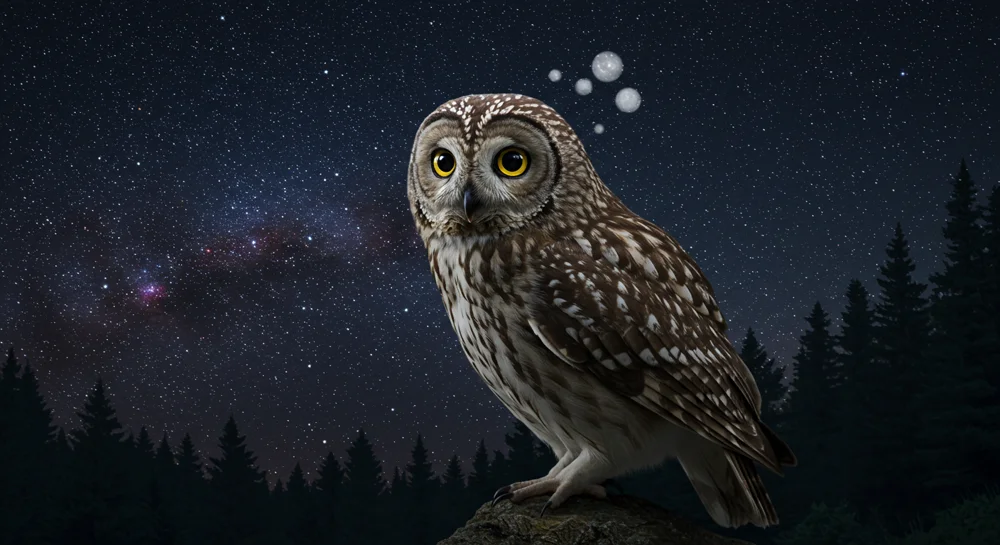
No.1
about
Owl thought about the stars all night, and it couldn’t sleep.
フクロウは星のことをずっと考えていて、眠れなかった。
about／前置詞／[əˈbaʊt]
めざせTOEIC600!
Oxford 3000の基本約1700語をベースに単語を紹介。
160件

Owl thought about the stars all night, and it couldn’t sleep.
フクロウは星のことをずっと考えていて、眠れなかった。
about／前置詞／[əˈbaʊt]
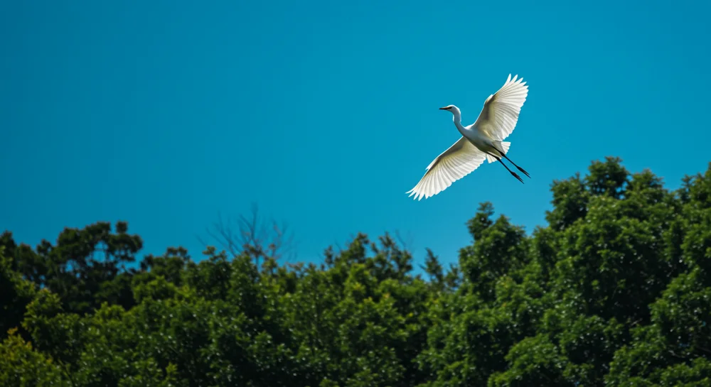
Bird flew above the trees, and it felt very free.
トリは木の上を飛んで、とても自由な気分だった。
above／前置詞／[əˈbʌv]

Frog jumped across the stream, and it landed on a soft leaf.
カエルは小川をぴょんと飛びこえて、やわらかい葉の上に着地した。
across／前置詞／[əˈkrɒs]

Lion took action when it saw the falling apple—it jumped and caught it.
ライオンはリンゴが落ちるのを見て、すぐに動き、飛びついてキャッチした。
action／名詞／[ˈækʃn]"

Bear joined the morning activity at the camp, and it danced with joy.
クマはキャンプの朝の活動に参加して、うれしそうに踊った。
activity／名詞／[ækˈtɪvəti]"
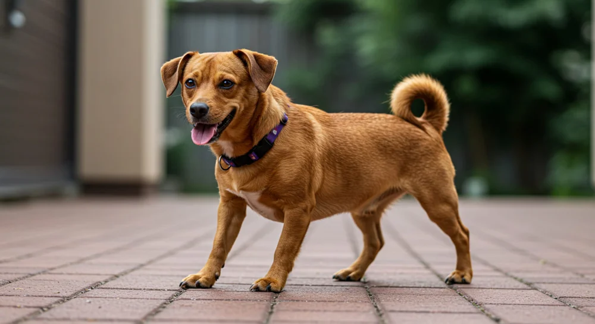
Dog wanted to be an actor, so it practiced walking with style.
イヌは俳優になりたくて、かっこよく歩く練習をした。
actor／名詞／[ˈæktə(r)]"
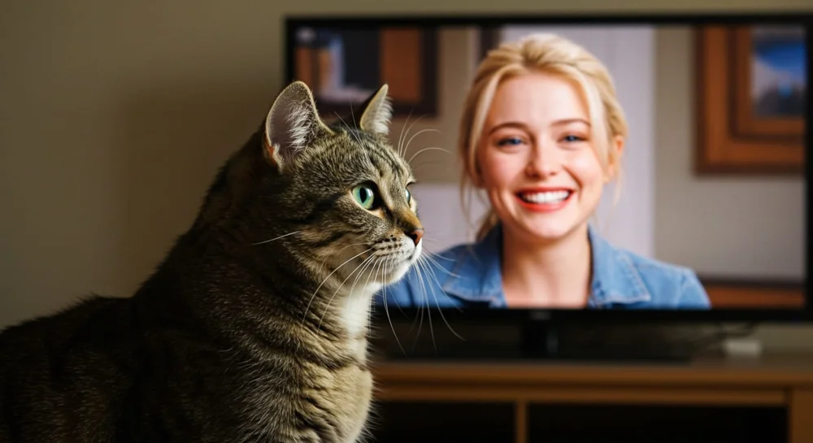
Cat saw an actress on TV, and it tried to copy her smile.
ネコはテレビの女優を見て、その笑顔をまねしようとした。
actress／名詞／[ˈæktrəs]"

Squirrel tried to add more nuts to its pile before winter came.
リスは冬が来る前に、木の実をもっと積み重ねようとした。
add／他動詞／[æd]"

Rabbit wrote its address on a leaf, then gave it to a friend.
ウサギは葉っぱに自分の住所を書いて、それを友だちに渡した。
address／名詞／[əˈdres]"
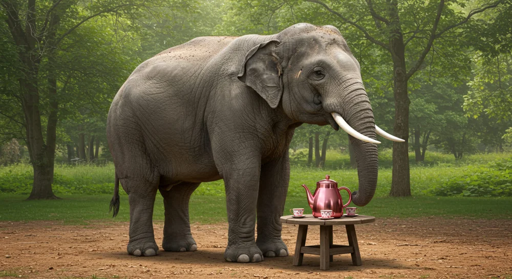
Elephant wanted to feel like an adult, so it made tea by itself.
ゾウは大人の気分になりたくて、自分でお茶をいれた。
adult／名詞／[ˈædʌlt]"

Koala gave advice to a bird, but it wasn’t sure it was helpful.
コアラはトリにアドバイスをしたけれど、それが役に立つか自信がなかった。
advice／名詞／[ədˈvaɪs]"
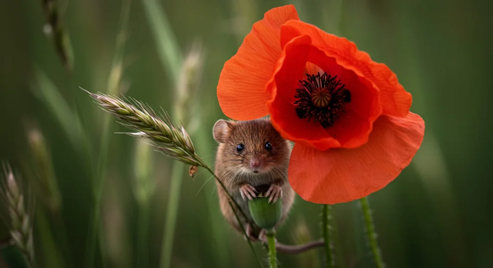
Mouse was afraid of the wind, so it hid behind a flower.
ネズミは風がこわくて、花のうしろにかくれた。
afraid／形容詞／[əˈfreɪd]"

Fox took a nap after lunch, and it dreamed about clouds.
キツネはお昼ごはんのあとに昼寝をして、雲の夢を見た。
after／前置詞／[ˈɑːftə(r)]"
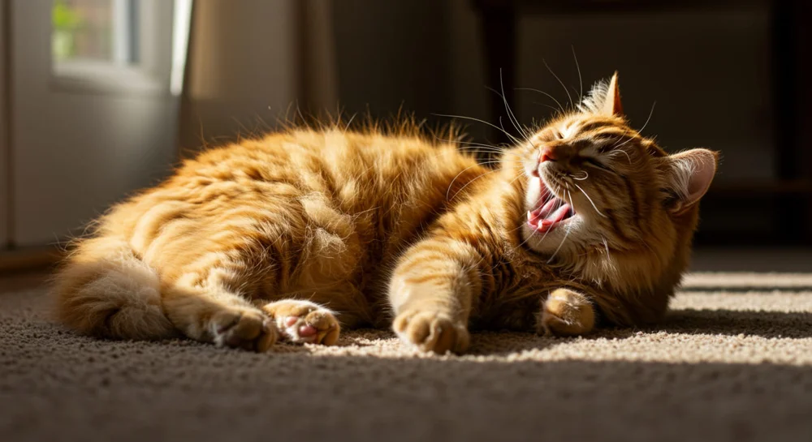
A cat slept all afternoon, and it looked happy when it finally woke up.
ネコは午後ずっと眠っていて、やっと起きたときには幸せそうだった。
afternoon／名詞／[ˈɑːftə(r)ˌnuːn]"

A rabbit tried again and again, and it never gave up on reaching the top of the hill.
ウサギは何度も挑戦し、ついに丘の頂上にたどり着くことをあきらめなかった。
again／副詞／[əˈɡen]"
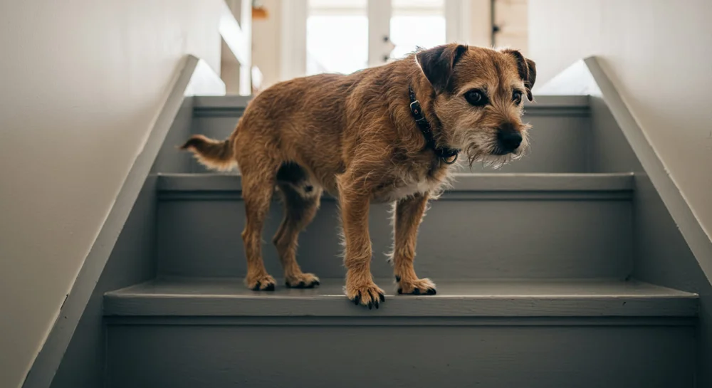
A dog showed its age when it slowly climbed the stairs.
イヌは階段をゆっくり上るとき、その年齢を感じさせた。
age／名詞／[eɪdʒ]"
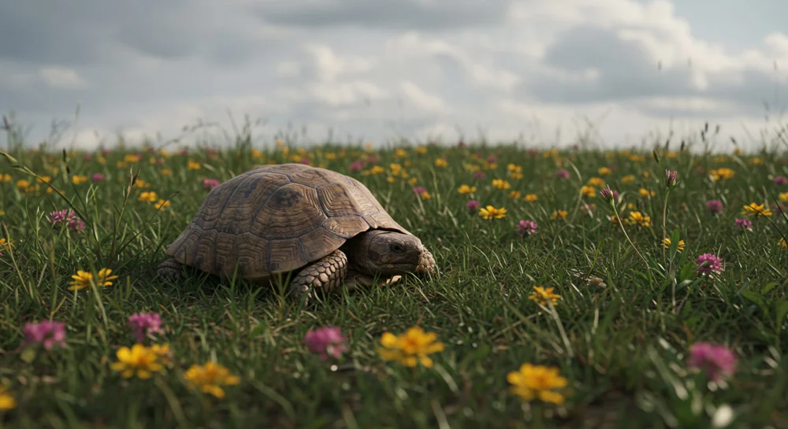
A turtle rested where it had stopped long ago.
カメは、ずっと前に止まった場所で休んでいた。
ago／副詞／[əˈɡəʊ]"
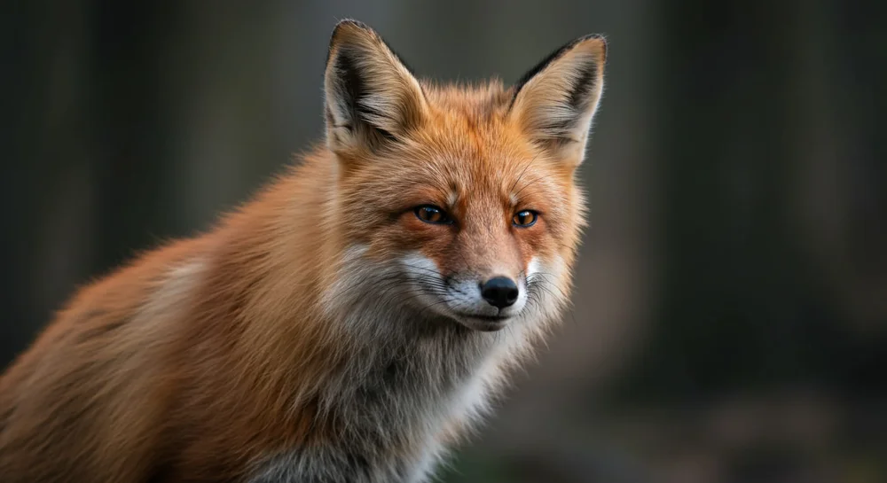
A fox nodded to agree, and it smiled quietly.
キツネはうなずいて同意し、静かに笑った。
agree／動詞／[əˈɡriː]"
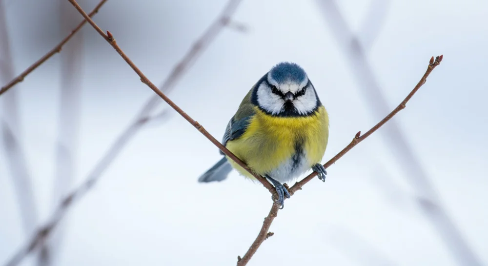
A bird felt the cold air, and it quickly fluffed its feathers.
鳥は冷たい空気を感じ、すぐに羽をふくらませた。
air／名詞／[eə(r)]"
A cat reached the airport early, and it waited near the gate with curiosity.
ネコは早めに空港に着き、ゲートの近くで好奇心いっぱいに待っていた。
airport／名詞／[ˈeəpɔːt]"
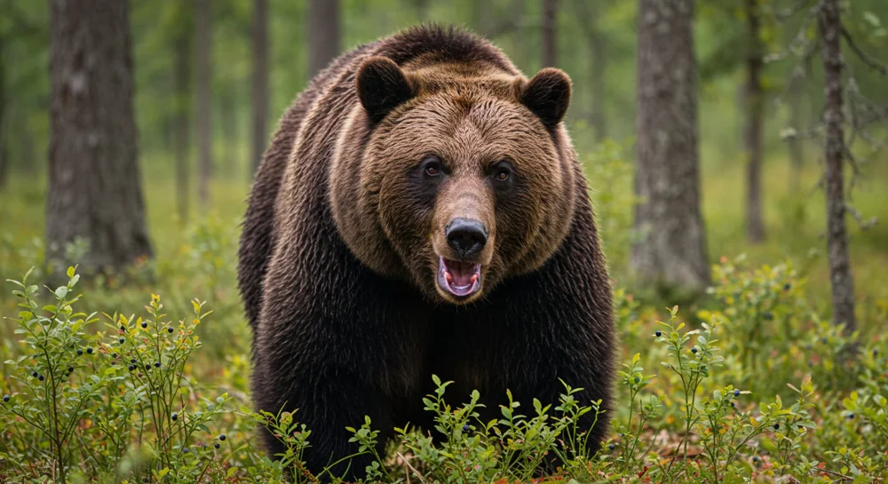
A bear ate all the berries, and it still looked for more.
クマはベリーを全部食べ、それでもまだ探していた。
all／代名詞・形容詞／[ɔːl]"

A rabbit liked the carrot and also shared it with a friend.
ウサギはニンジンが好きで、それを友だちにも分けてあげた。
also／副詞／[ˈɔːlsəʊ]"

A dog always wagged its tail, and it made everyone smile.
イヌはいつも尻尾を振り、その姿がみんなを笑顔にした。
always／副詞／[ˈɔːlweɪz]"

A dolphin made an amazing jump and splashed as it landed.
イルカは驚くべきジャンプをして、着水したとき水しぶきを上げた。
amazing／形容詞／[əˈmeɪzɪŋ]
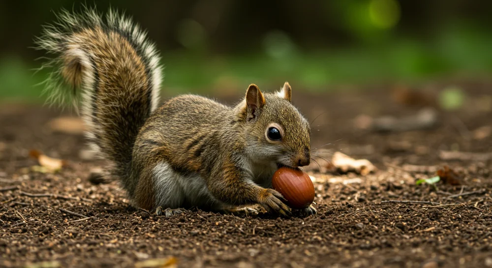
A squirrel carried an acorn and buried it.
リスはドングリを運んで、それを埋めた。
an／冠詞／[æn]
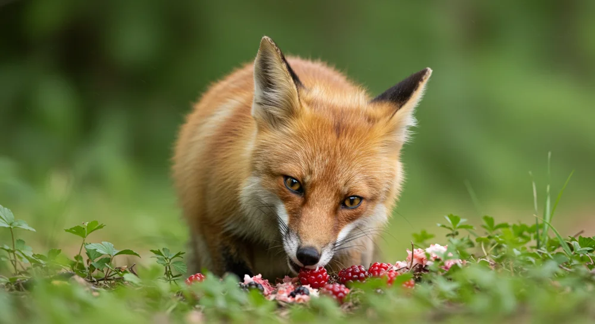
A fox found food and ate it quickly.
キツネは食べ物を見つけて、それをすぐに食べた。
and／接続詞／[ænd]
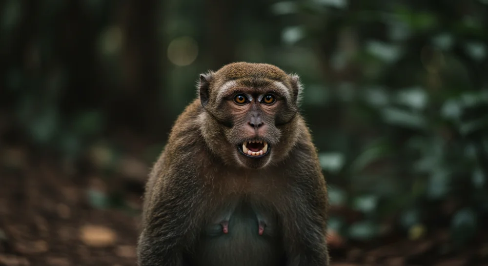
A monkey looked angry and stayed still.
サルは怒っているように見えて、じっとしていた。
angry／形容詞／[ˈæŋɡri]

A horse saw a small animal and watched it quietly.
ウマは小さな動物を見て、静かに見つめた。
animal／名詞／[ˈænɪml]
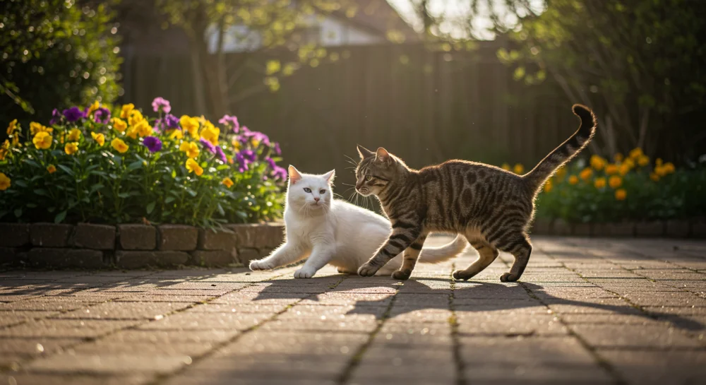
A cat saw another cat and chased it playfully.
ネコは別のネコを見て、楽しそうに追いかけた。
another／形容詞・代名詞／[əˈnʌðə(r)]
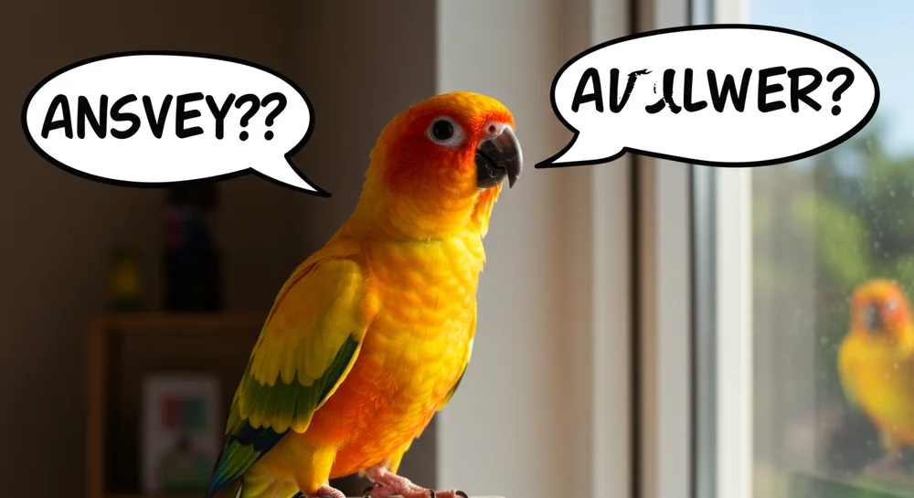
A parrot heard a question and gave an answer.
オウムは質問を聞いて、答えを出した。
answer／名詞／[ˈænsə(r)]
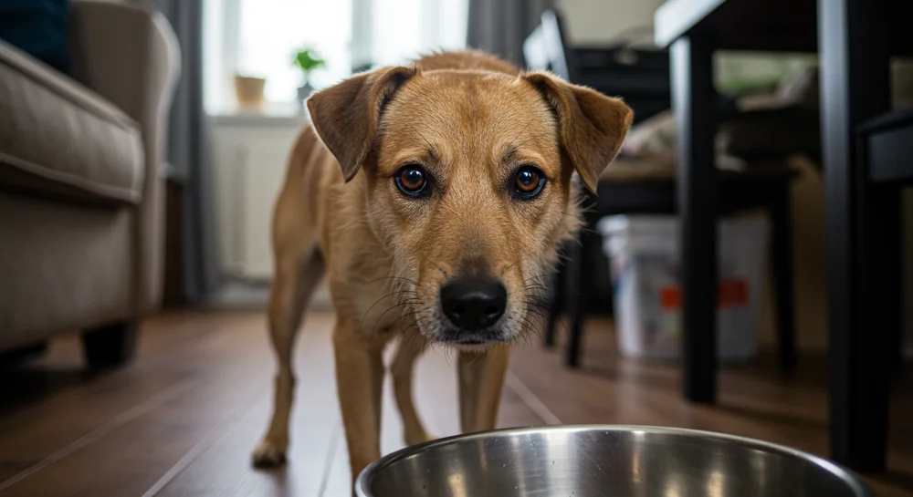
A dog didn’t see any food and kept looking for it.
イヌは食べ物をまったく見つけられず、それを探し続けた。
any／形容詞・代名詞／[ˈeni]
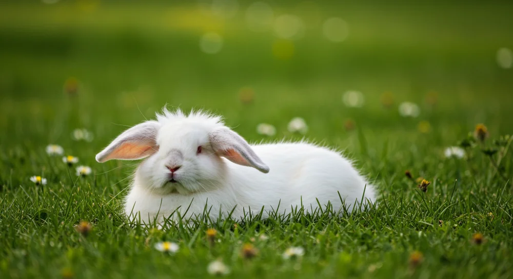
A rabbit didn’t see anyone and relaxed.
ウサギは誰も見かけなかったので、くつろいだ。
anyone／代名詞／[ˈeniwʌn]
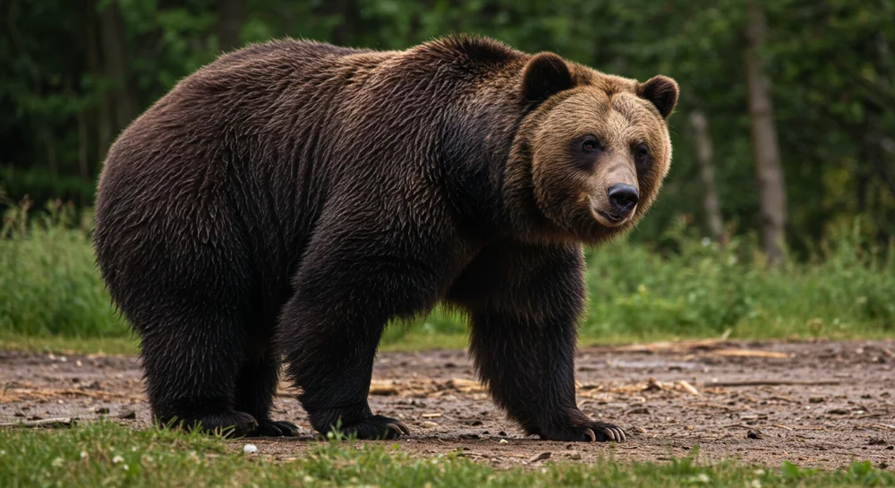
A bear didn’t touch anything and walked away quietly.
クマは何も触らず、静かに立ち去った。
anything／代名詞／[ˈeniθɪŋ]
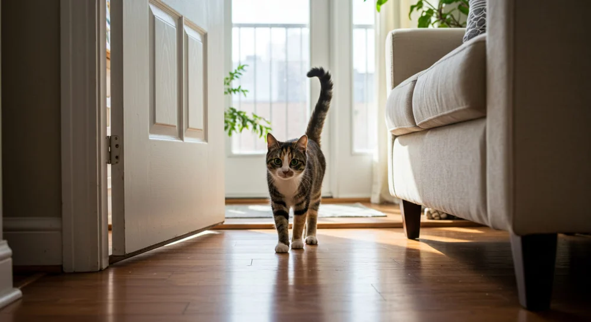
A cat entered an apartment and explored it.
ネコはアパートに入り、探検した。
apartment／名詞／[əˈpɑːtmənt]

A monkey found an apple and ate it quickly.
サルはリンゴを見つけ、すぐに食べた。
apple／名詞／[ˈæpl]

A dog marked a park area and stayed there.
イヌは公園の一角に印をつけ、そこにとどまった。
area／名詞／[ˈeəriə]

A bird hurt its arm and rested quietly.
鳥は翼を痛め、静かに休んだ。
arm／名詞／[ɑːm]
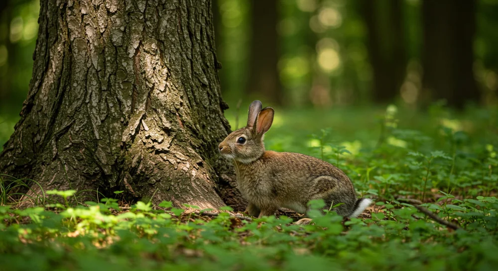
A rabbit looked around a tree and hopped away.
ウサギは木のまわりを見て、ぴょんと跳ねて行った。
around／前置詞・副詞／[əˈraʊnd]
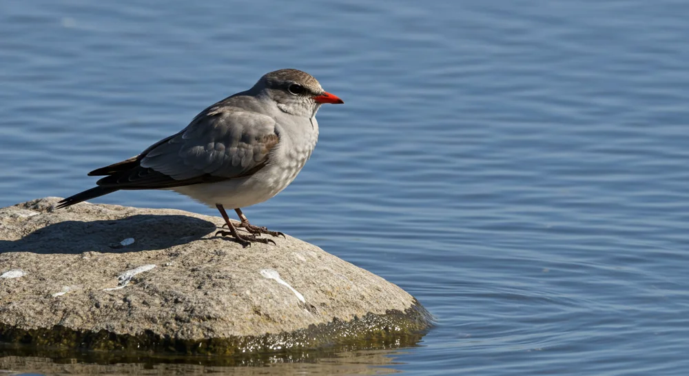
A bird arrived at a lake and rested on a rock.
鳥は湖に着き、岩の上で休んだ。
arrive／動詞／[əˈraɪv]

A cat saw art on a wall and stared at it.
ネコは壁の芸術作品を見て、じっと見つめた。
art／名詞／[ɑːt]
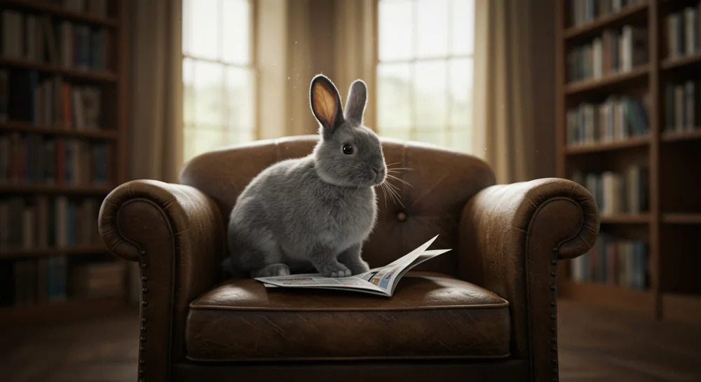
A rabbit read an article and sat quietly.
ウサギは記事を読んで、静かに座った。
article／名詞／[ˈɑːtɪkl]
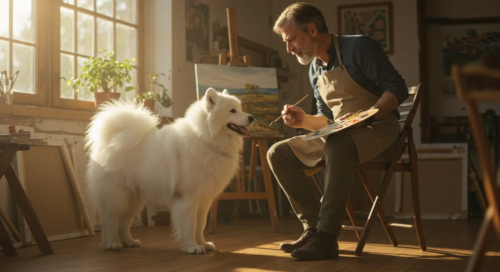
A dog met an artist and wagged its tail.
イヌは芸術家に会い、尻尾を振った。
artist／名詞／[ˈɑːtɪst]

A horse ran as fast as it could.
ウマはできるだけ速く走った。
as／接続詞・副詞／[æz]
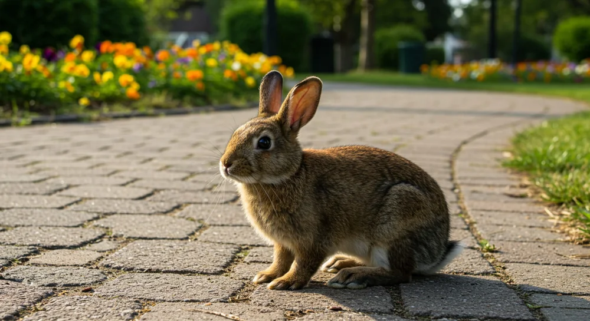
A rabbit asked a question and waited for an answer.
ウサギは質問をして、答えを待った。
ask／動詞／[æsk]

A cat sat at the window and watched the street.
ネコは窓辺に座り、通りを見ていた。
at／前置詞／[æt]
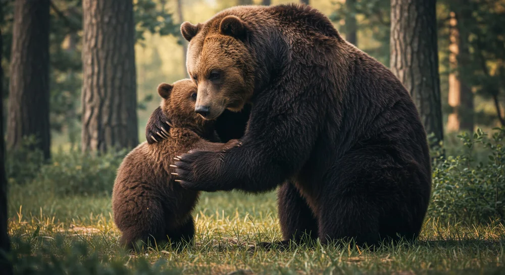
A bear visited its aunt and hugged her gently.
クマはおばを訪ね、やさしく抱きしめた。
aunt／名詞／[ænt]

A squirrel gathered nuts in autumn and stored them.
リスは秋に木の実を集め、ためこんだ。
autumn／名詞／[ˈɔːtəm]
A dog pulled an auxiliary cart and delivered food.
イヌは補助の荷車を引き、食べ物を運んだ。
auxiliary／形容詞／[ɔːɡˈzɪliəri]

A bird flew away and disappeared into the sky.
鳥は飛び去り、空のかなたに消えた。
away／副詞／[əˈweɪ]

A cat watched a baby and purred softly.
ネコは赤ちゃんを見つめ、やさしくゴロゴロと鳴いた。
baby／名詞／[ˈbeɪbi]

A dog looked back and barked once.
イヌは振り返って、ひと声ほえた。
back／副詞／[bæk]
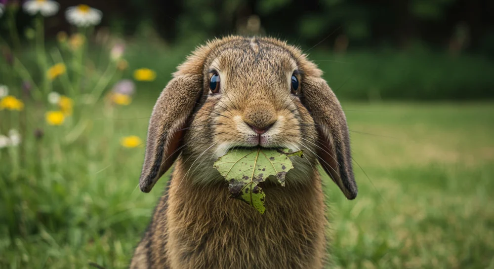
A rabbit ate a bad leaf and made a face.
ウサギは悪くなった葉を食べて、しかめっ面をした。
bad／形容詞／[bæd]
A bear carried home a bag of berries.
クマはベリーの入った袋を家に運んだ。
bag／名詞／[bæɡ]

A dog chased a ball across the yard.
イヌは庭を横切ってボールを追いかけた。
ball／名詞／[bɔːl]

A monkey grabbed a banana from the tree.
サルは木からバナナをつかんだ。
banana／名詞／[bəˈnænə]
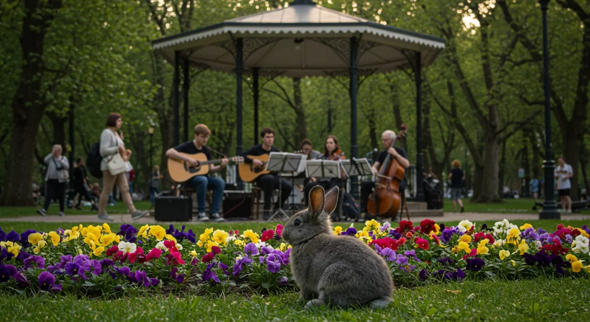
A rabbit heard a band in the park.
ウサギは公園でバンドの演奏を聞いた。
band／名詞／[bænd]

A duck swam near the bank of the river.
カモは川の岸の近くを泳いだ。
bank／名詞／[bæŋk]

A cat took a bath in warm water.
ネコは温かいお湯で風呂に入った。
bath／名詞／[bɑːθ]

A cat ran into the bathroom to hide from the noise.
ネコは物音から逃げるために浴室に駆け込んだ。
bathroom／名詞／[ˈbɑːθruːm]

A dog wanted to be near its owner.
イヌは飼い主のそばにいたいと思った。
be／動詞／[biː]
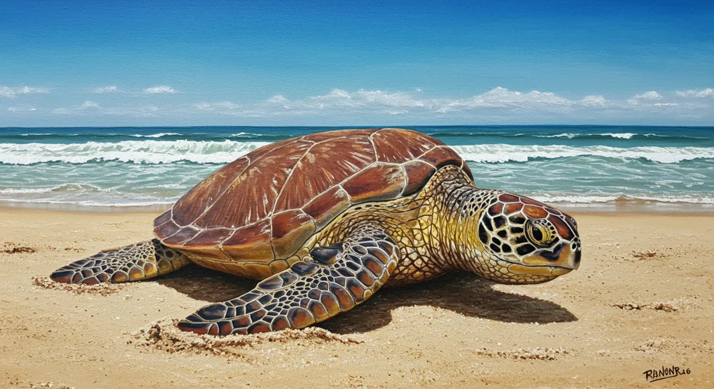
A turtle rested on the beach.
カメは浜辺で休んでいた。
beach／名詞／[biːtʃ]
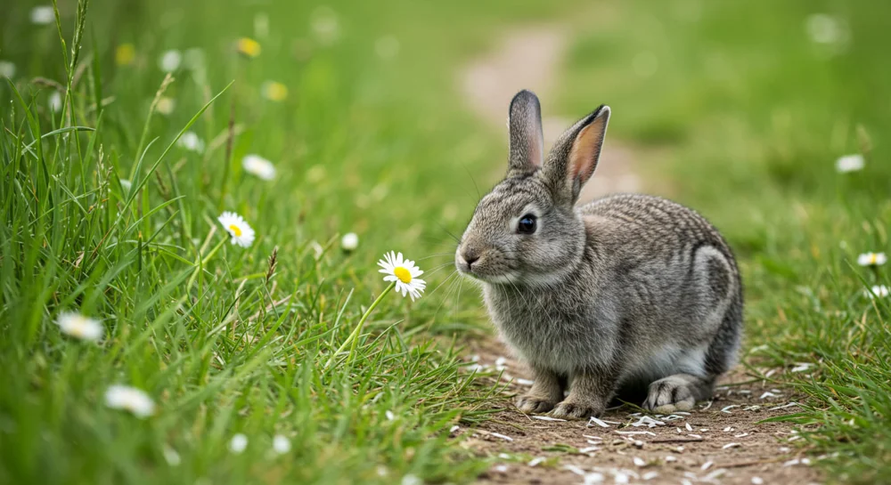
A rabbit found a beautiful flower near the path.
ウサギは小道のそばで美しい花を見つけた。
beautiful／形容詞／[ˈbjuːtɪfl]
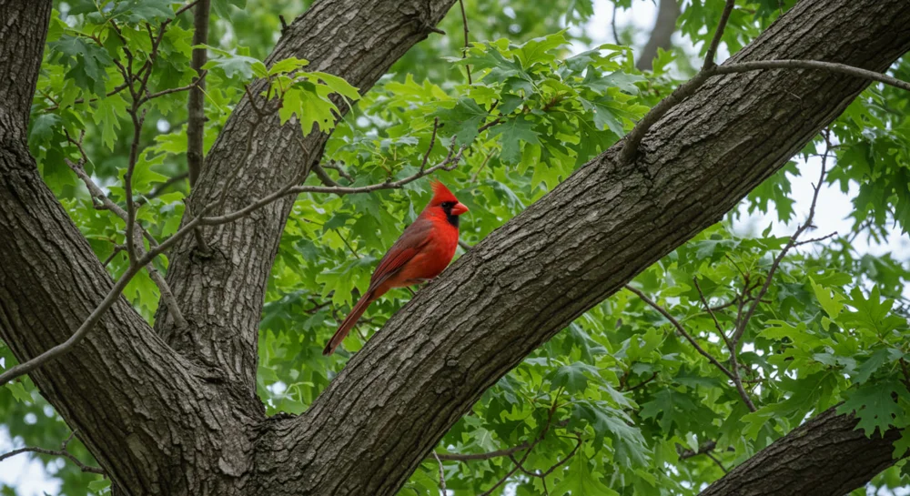
A bird stayed in the tree because it felt safe there.
鳥はそこが安全だと感じたので木にとどまった。
because／接続詞／[bɪˈkɔːz]
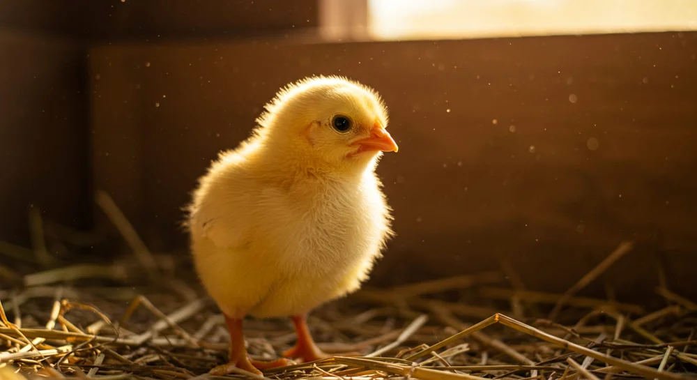
A chick will become a chicken one day.
ひよこはいつかニワトリになるだろう。
become／動詞／[bɪˈkʌm]

A cat jumped onto the bed and fell asleep quickly.
ネコはベッドに飛び乗り、すぐに眠ってしまった。
bed／名詞／[bed]

A cat slept in the bedroom near the window.
ネコは窓のそばの寝室で眠った。
bedroom／名詞／[ˈbedruːm]

A bear found a bottle of beer on the table.
クマはテーブルの上にあるビールの瓶を見つけた。
beer／名詞／[bɪə(r)]
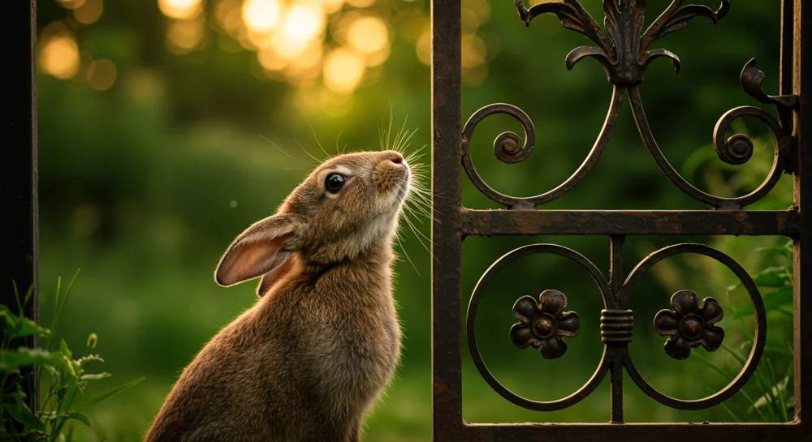
A rabbit stopped before the gate and looked up at it.
ウサギは門の前で立ち止まり、それを見上げた。
before／前置詞／[bɪˈfɔː(r)]
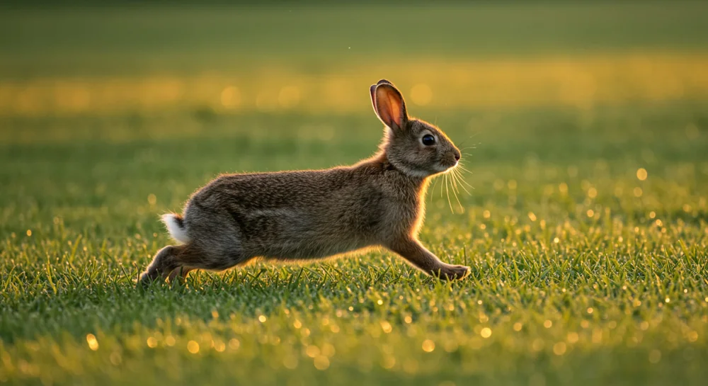
A rabbit began its run after sunrise.
ウサギは日の出後に走り始めた。
begin／動詞／[bɪˈɡɪn]

The beginning of spring made a rabbit hop with joy.
春の始まりはウサギを喜びで跳ねさせた。
beginning／名詞／[bɪˈɡɪnɪŋ]
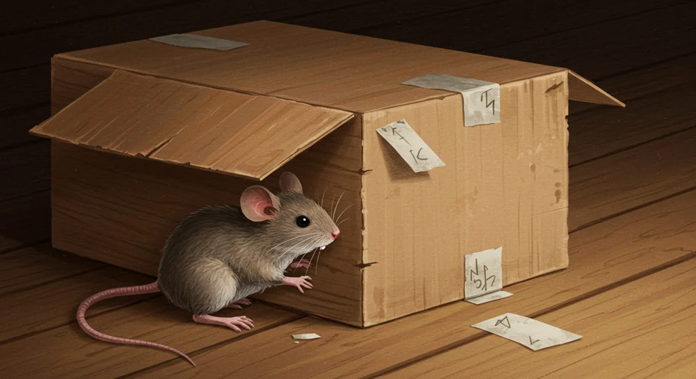
A mouse hid behind the box to stay safe.
ネズミは安全のために箱の後ろに隠れた。
behind／前置詞／[bɪˈhaɪnd]

A fox seemed to believe the story it heard.
キツネは聞いた話を信じているように見えた。
believe／動詞／[bɪˈliːv]

A rabbit hid below the table during the storm.
ウサギは嵐のあいだテーブルの下に隠れた。
below／前置詞／[bɪˈləʊ]
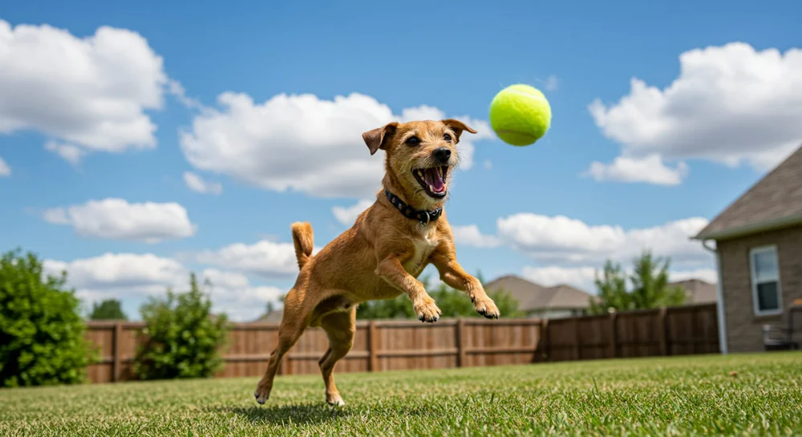
A dog gave its best effort to catch the ball.
イヌはボールを取ろうと最善を尽くした。
best／形容詞／[best]
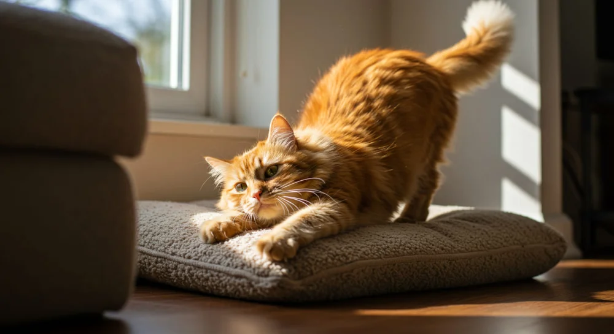
A cat felt better after a long nap.
ネコは長い昼寝のあと、気分がよくなった。
better／形容詞／[ˈbetə(r)]

A rabbit rested between two trees.
ウサギは2本の木の間で休んだ。
between／前置詞／[bɪˈtwiːn]
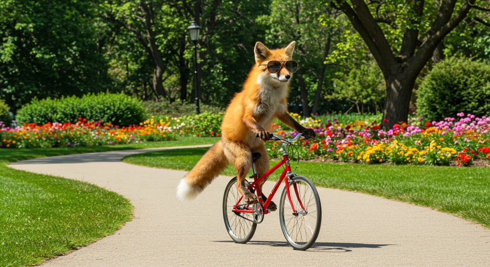
A fox rode a bicycle through the park.
キツネは自転車に乗って公園を走り抜けた。
bicycle／名詞／[ˈbaɪsɪkl]

A bear carried a big basket of apples.
クマは大きなリンゴのかごを運んだ。
big／形容詞／[bɪɡ]

A dog rode a bike beside the river.
イヌは川沿いで自転車に乗った。
bike／名詞／[baɪk]

A duck carried a bill in its beak.
アヒルはくちばしで請求書を運んだ。
bill／名詞／[bɪl]

A small bird sang on the fence.
小さな鳥が柵の上で歌った。
bird／名詞／[bɜːd]

A bear enjoyed a birthday cake with friends.
クマは友だちと誕生日ケーキを楽しんだ。
birthday／名詞／[ˈbɜːrθdeɪ]
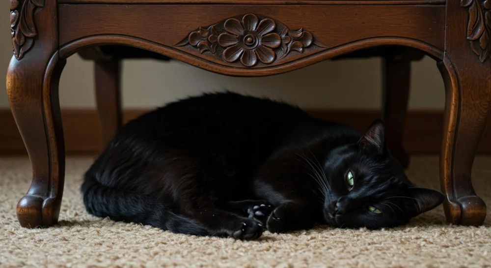
A black cat slept under a chair.
黒いネコが椅子の下で眠った。
black／形容詞／[blæk]

A panda wrote a travel blog about its bamboo forest.
パンダは自分の竹林についての旅行ブログを書いた。
blog／名詞／[blɒɡ]
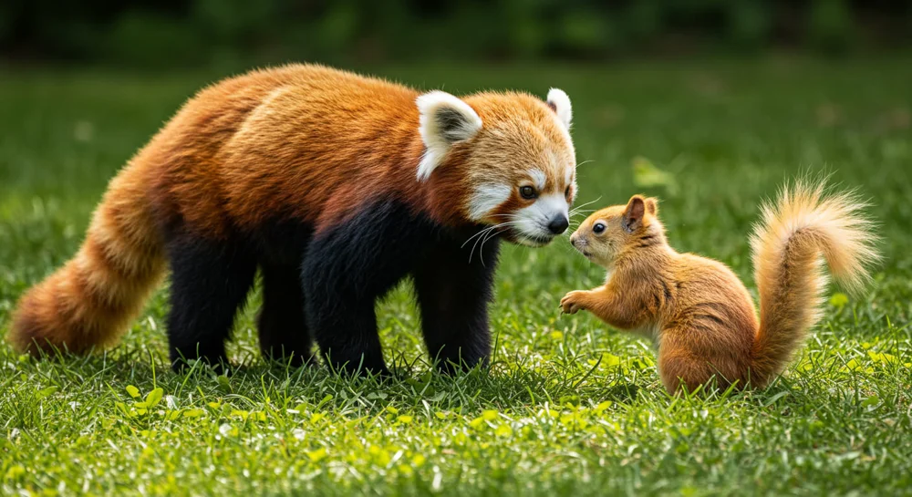
A red panda met a blonde squirrel on a sunny day.
レッサーパンダは晴れた日に金色のリスに出会った。
blonde／形容詞／[blɒnd]

A seal swam under the blue sky near the shore.
アザラシは海岸近くで青い空の下を泳いだ。
blue／形容詞／[bluː]

A fox jumped into a boat to see the lake better.
キツネは湖をよく見るためにボートに飛び乗った。
boat／名詞／[bəʊt]

A rabbit stretched its body after waking up.
ウサギは目を覚まして体を伸ばした。
body／名詞／[ˈbɒdi]

A panda read a book about mountain adventures.
パンダは山の冒険についての本を読んだ。
book／名詞／[bʊk]
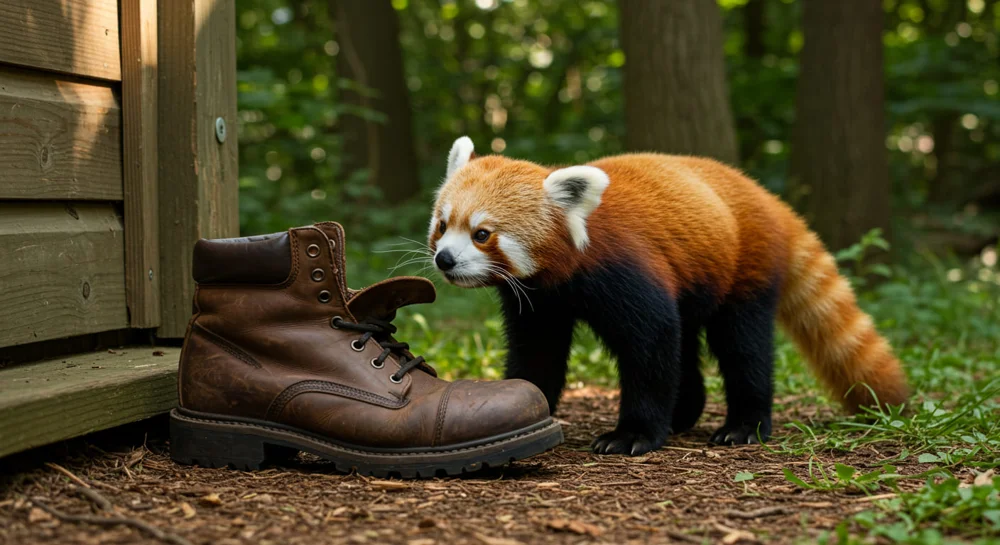
A red panda found a boot near the cabin door.
レッサーパンダは小屋のドアの近くでブーツを見つけた。
boot／名詞／[buːt]

A seal looked bored while waiting for the fish.
アザラシは魚を待つあいだ退屈そうにしていた。
bored／形容詞／[bɔːd]
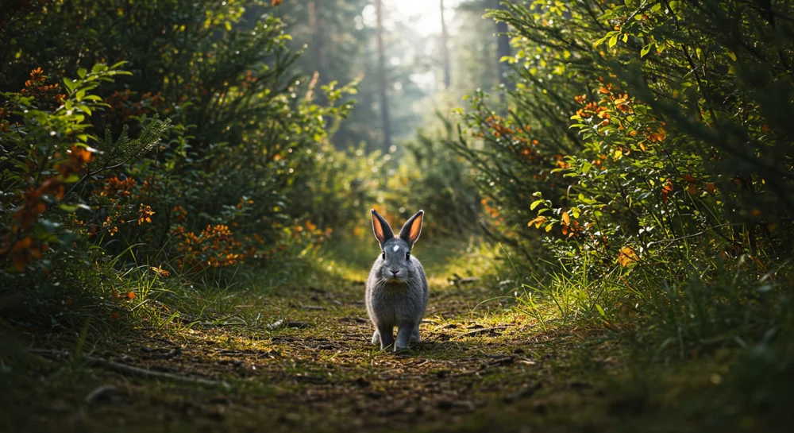
A rabbit left the boring field to explore a forest.
ウサギは退屈な野原を離れて森を探検した。
boring／形容詞／[ˈbɔːrɪŋ]
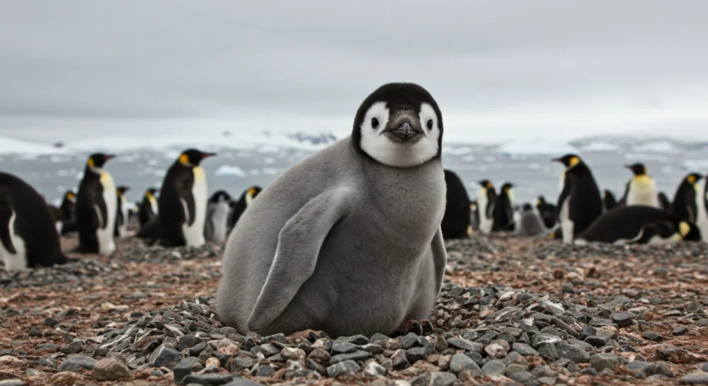
A penguin chick was born in the cold nest.
ペンギンのひなは寒い巣で生まれた。
born／動詞（過去分詞）／[bɔːn]

A squirrel carried both nuts in its cheeks.
リスは両方の木の実をほお袋に入れて運んだ。
both／代名詞・形容詞／[bəʊθ]

Raccoon found a bottle under a leaf, and it carefully pulled it out.
アライグマは葉の下にボトルを見つけて、そっと引っぱり出した。
bottle／名詞／[ˈbɒtl]
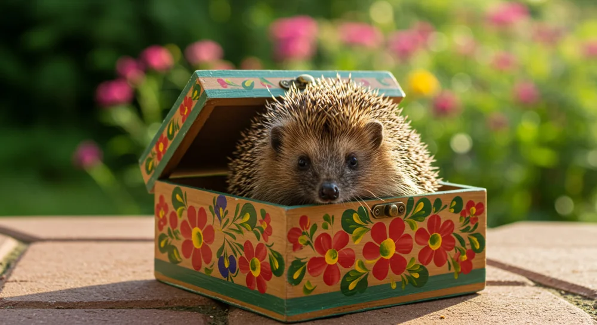
A hedgehog hid in a box to feel safe.
ハリネズミは安心するために箱の中に隠れた。
box／名詞／[bɒks]

A dolphin swam beside a boy near the shore.
イルカは岸辺近くで少年のそばを泳いだ。
boy／名詞／[bɔɪ]
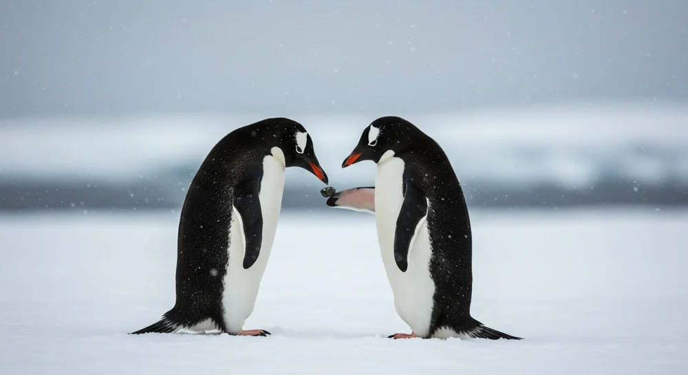
A penguin gave its boyfriend a shiny pebble.
ペンギンはボーイフレンドに光る小石を渡した。
boyfriend／名詞／[ˈbɔɪˌfrend]
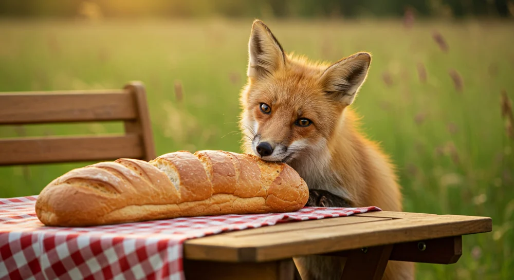
A fox grabbed bread from the table.
キツネはテーブルからパンを取った。
bread／名詞／[bred]
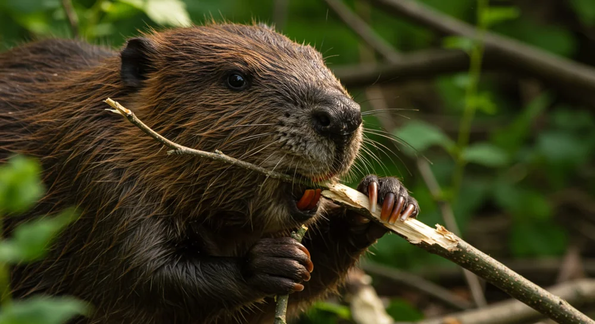
A beaver used its teeth to break a small branch.
ビーバーは歯を使って小さな枝を折った。
break／動詞／[breɪk]

A red panda enjoyed breakfast with sweet fruit.
レッサーパンダは甘い果物で朝食を楽しんだ。
breakfast／名詞／[ˈbrekfəst]
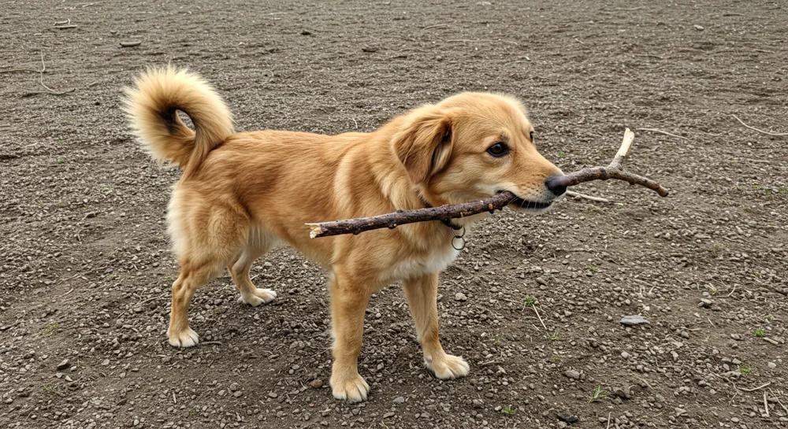
A dog tried to bring a stick back to its owner.
イヌは棒を飼い主のところに持っていこうとした。
bring／動詞／[brɪŋ]
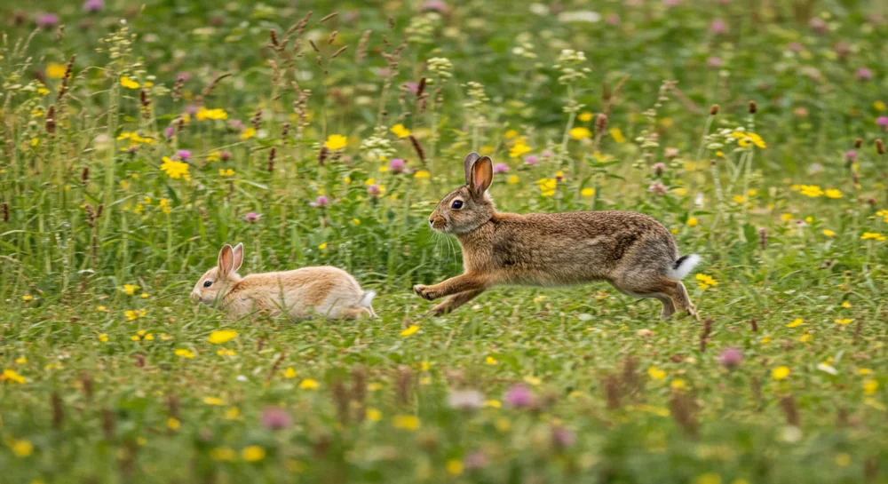
A rabbit hopped after its younger brother in the field.
ウサギは野原で弟の後をぴょんぴょん追いかけた。
brother／名詞／[ˈbrʌðə(r)]

A brown bear searched for berries near the river.
茶色のクマが川の近くでベリーを探した。
brown／形容詞／[braʊn]

A cat tried to build a small tower with blocks.
ネコはブロックで小さな塔を作ろうとした。
build／動詞／[bɪld]
A squirrel climbed a tall building near the park.
リスは公園近くの高い建物に登った。
building／名詞／[ˈbɪldɪŋ]

A rabbit waited for a bus on a rainy morning.
ウサギは雨の朝にバスを待った。
bus／名詞／[bʌs]

A fox started a small business selling berries.
キツネはベリーを売る小さな商売を始めた。
business／名詞／[ˈbɪznəs]

A beaver was busy fixing its wooden dam.
ビーバーは木のダムを直すのに忙しかった。
busy／形容詞／[ˈbɪzi]
A hedgehog wanted to run, but it stayed in the soft grass.
ハリネズミは走りたかったが、やわらかい草の上にとどまった。
but／接続詞／[bʌt]
A raccoon licked butter from a slice of bread.
アライグマはパンの上のバターをなめた。
butter／名詞／[ˈbʌtə(r)]

A ferret tried to buy a hat at the market.
フェレットは市場で帽子を買おうとした。
buy／動詞／[baɪ]

A chinchilla sat by the warm fireplace.
チンチラは暖かい暖炉のそばに座った。
by／前置詞／[baɪ]

A seal waved its flipper to say bye to a boat.
アザラシはボートに別れを告げるためにヒレを振った。
bye／間投詞／[baɪ]
A rabbit relaxed at a small cafe by the river.
ウサギは川のそばの小さなカフェでくつろいだ。
cafe／名詞／[kæˈfeɪ]

A squirrel shared a piece of cake with a bird.
リスはケーキの一切れを鳥と分け合った。
cake／名詞／[keɪk]

A penguin made a loud call to find its friend.
ペンギンは友だちを探すために大きな声で鳴いた。
call／名詞・動詞／[kɔːl]

A red panda posed in front of the camera.
レッサーパンダはカメラの前でポーズをとった。
camera／名詞／[ˈkæmərə]

A seal cannot climb a tall rock easily.
アザラシは高い岩を簡単には登れない。
cannot／助動詞／[ˈkænɒt]

A cat visited the capital city to see tall towers.
ネコは高い塔を見るために首都を訪れた。
capital／名詞／[ˈkæpɪtl]

A rabbit rode in a car to the forest.
ウサギは森へ行くために車に乗った。
car／名詞／[kɑː(r)]
A squirrel wrote a message on the colorful card.
リスはカラフルなカードにメッセージを書いた。
card／名詞／[kɑːd]

A penguin started a new career as a lighthouse guide.
ペンギンは灯台案内係として新しい仕事を始めた。
career／名詞／[kəˈrɪə(r)]

A hamster hid a carrot inside its nest.
ハムスターは巣の中にニンジンを隠した。
carrot／名詞／[ˈkærət]
A beaver can carry logs across the river.
ビーバーは川を渡って丸太を運ぶことができる。
carry／動詞／[ˈkæri]
A cat slept on a soft pillow by the window.
ネコは窓際のやわらかい枕の上で眠った。
cat／名詞／[kæt]

A squirrel found a shiny cent under the bench.
リスはベンチの下で光る1セント硬貨を見つけた。
cent／名詞／[sent]

A dolphin swam to the centre of the pool.
イルカはプールの中央まで泳いだ。
centre／名詞／[ˈsentə(r)]
An owl seemed to guard the tree for over a century.
フクロウは100年以上その木を守ってきたように見えた。
century／名詞／[ˈsentʃəri]

A koala sat on a wooden chair under the shade.
コアラは日陰の木製の椅子に座った。
chair／名詞／[tʃeə(r)]
A parrot can change its song to copy another bird.
オウムはほかの鳥をまねて歌を変えることができる。
change／動詞／[tʃeɪndʒ]
A parrot looked at a colorful chart on the wall.
オウムは壁にかかったカラフルな表を見た。
chart／名詞／[tʃɑːt]
A rabbit bought a cheap hat at the market.
ウサギは市場で安い帽子を買った。
cheap／形容詞／[tʃiːp]

A dolphin came to check the boat near the pier.
イルカは桟橋近くのボートを見に来た。
check／動詞／[tʃek]
A squirrel held a tiny piece of cheese in its paws.
リスは小さなチーズを前足で抱えた。
cheese／名詞／[tʃiːz]

A kitten touched a child’s shoe.
子ネコが子どもの靴に触った。
child／名詞／[tʃaɪld]
A panda cub held a bar of chocolate.
子パンダが板チョコを１枚持っていた。
chocolate／名詞／[ˈtʃɒk.lət]
Monkey could not choose a banana, so it just sat and stared at both.
サルはどのバナナにするか決められず、2本を見つめて座りこんだ。
choose／他動詞／[tʃuːz]
A rabbit chose a carrot.
ウサギはニンジンを選んだ。
choose／動詞／[tʃuːz]
A puppy waited at the cinema.
子イヌが映画館で待っていた。
cinema／名詞／[ˈsɪnəmə]

A bird flew over the city.
鳥は都市の上を飛んだ。
city／名詞／[ˈsɪti]
A panda cub joined the class.
子パンダが授業に参加した。
class／名詞／[klɑːs]
A kitten sat on the desk in a classroom.
子ネコが教室の机の上に座っていた。
classroom／名詞／[ˈklɑːsruːm]
A puppy cleaned its bowl.
子イヌが自分のボウルをきれいにした。
clean／動詞／[kliːn]

A koala climbed a tree.
コアラが木に登った。
climb／動詞／[klaɪm]
A hedgehog watched the clock.
ハリネズミは時計をじっと見た。
clock／名詞／[klɒk]

A penguin wore new clothes.
ペンギンが新しい服を着ていた。
clothes／名詞／[kləʊðz]

A bunny joined a club.
ウサギがクラブに参加した。
club／名詞／[klʌb]
A rabbit in a red coat sat on the grass.
赤いコートを着たウサギが草の上に座っていた。
coat／名詞／[kəʊt]

A squirrel was drinking coffee from a small cup.
リスが小さなカップからコーヒーを飲んでいた。
coffee／名詞／[ˈkɒf.i]
A penguin was shivering in the cold snow.
ペンギンが寒い雪の中で震えていた。
cold／形容詞／[kəʊld]

A fox sat in front of the college gate.
キツネが大学の門の前に座っていた。
college／名詞／[ˈkɒl.ɪdʒ]

A parrot showed its bright green colour on a branch.
オウムが枝の上で鮮やかな緑色を見せていた。
colour／名詞／[ˈkʌl.ər]
Fox tried to compare the clouds, but they kept changing shape.
キツネは雲を比べようとしたけど、形がどんどん変わってしまった。
compare／他動詞／[kəmˈpeə(r)]
The cat moved its ear when it heard a small sound.
ネコは小さな音を聞いて、耳を動かした。
ear／名詞／[ɪə(r)]
Duck made a list of snacks, but it forgot the most important one—bread.
アヒルはおやつのリストを作ったけど、一番大事なパンを忘れた。
list／名詞／[lɪst]

Dog saw its neighbour through the fence and wagged its tail.
イヌはフェンス越しにとなりの動物を見て、しっぽをふった。
neighbour／名詞／[ˈneɪbə(r)]
Elephant didn’t know the meaning of the word, but it liked how it sounded.
ゾウはその言葉の意味を知らなかったけど、音が気に入った。
meaning／名詞／[ˈmiːnɪŋ]
Koala visited the hospital with a flower, and it smiled at the nurse.
コアラは花を持って病院を訪れ、看護師に笑いかけた。
hospital／名詞／[ˈhɒspɪtl]

Mouse dropped its cheese and ran after it, afraid to lose it.
ネズミはチーズを落として、それをなくすのがこわくて追いかけた。
lose／他動詞／[luːz]
もっと英単語を学びたい方へ：英単語300 - 動物たちと楽しく！（Kindle）